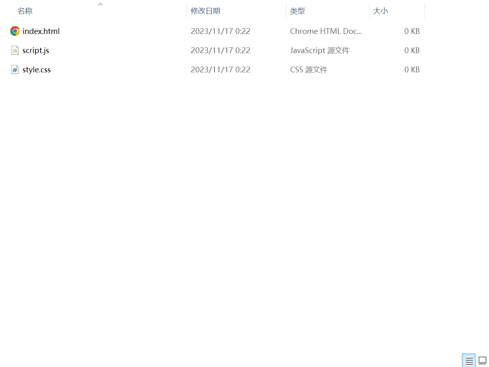
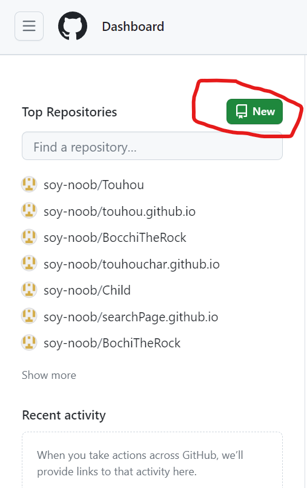
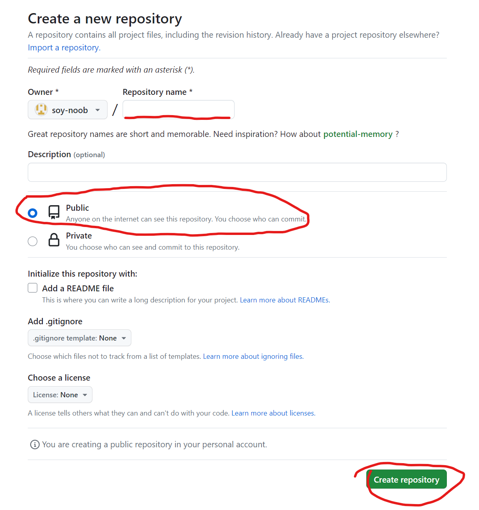
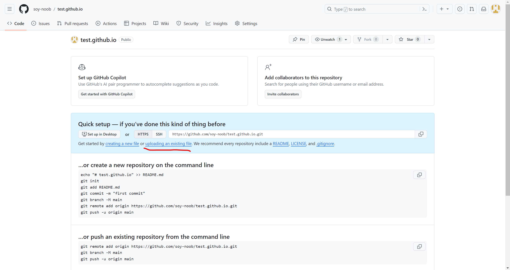
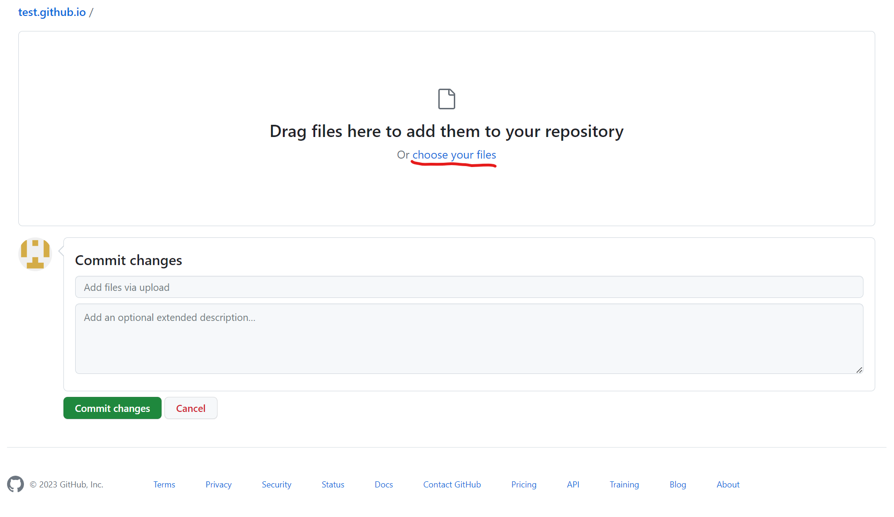
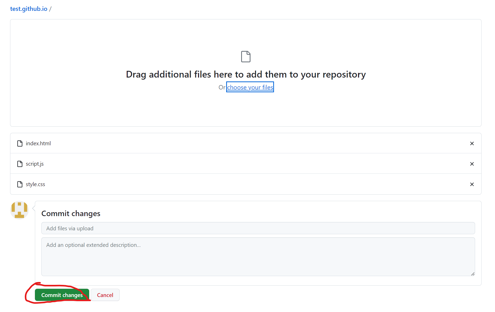
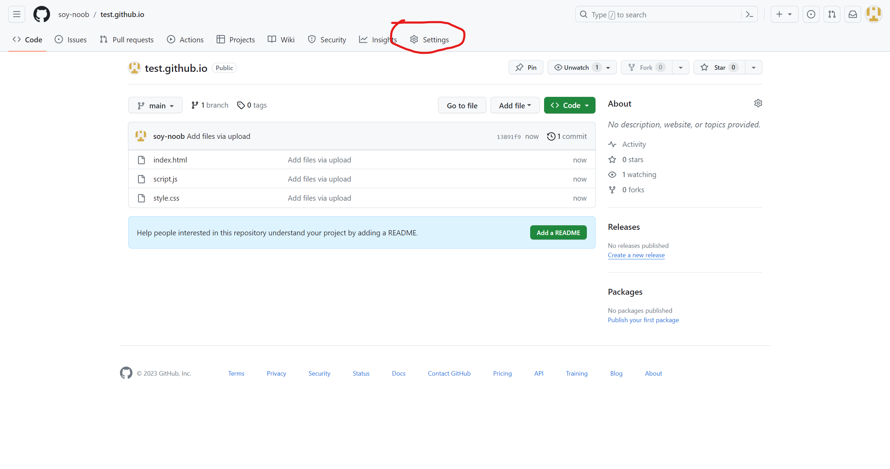
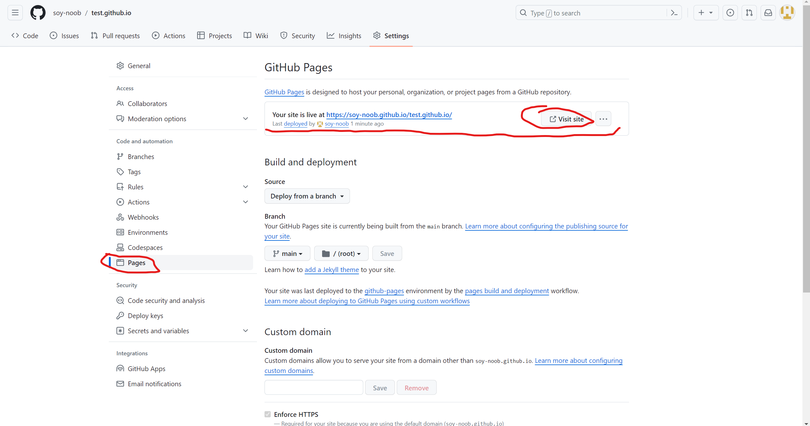
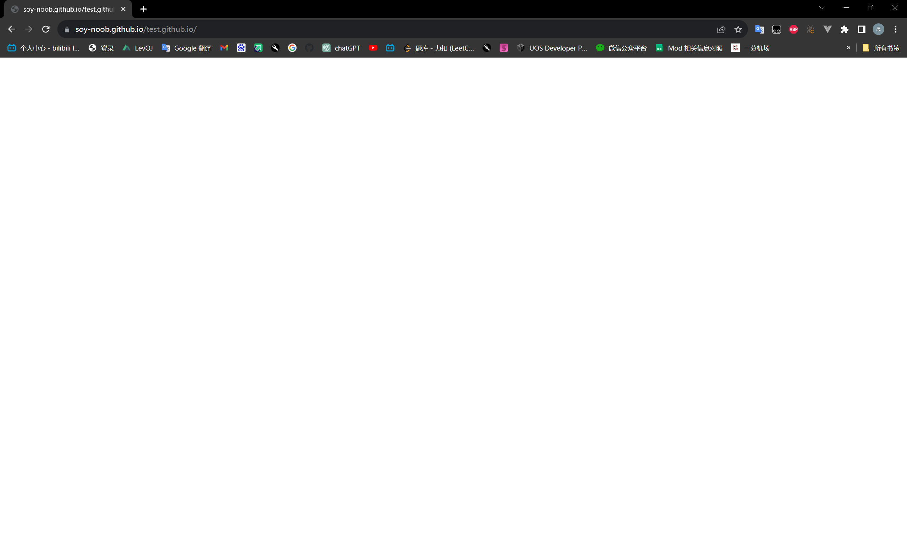

自己的小网站终于写好了，想上传到网上分享给小伙伴们，但是不知道该怎么做。目前有很多部署静态网站的方法，例如Vercel，GitHub Pages等。
今天介绍一下使用GitHub Pages部署静态网站
1、准备文件
准备基础的前端三件套，并放置在同一个文件夹下。

2、新建仓库
打开Github，登陆后点击左侧的New

在新窗口中的Repository name栏中输入仓库名（注意格式为"名字.github.io"）。
然后选择Public，否则其他人访问不了你的网站。
README文件可选择是否添加。
然后点击Create repository创建仓库

3、添加文件
在新窗口中点击uploading an existing file

在新窗口中点击choose your files或者拖拽文件到方框中上传网站文件

等文件全部上传后点击commit changes保存更改

4、测试结果
由于网络问题，可能需要等待一段时间（几分钟到十几分钟）。然后点击页面的settings进入设置页面

在设置界面中点击Pages，然后最上方Github Pages下的那一串网址就是你网站的网址了，点击右侧的Visit site可以访问你的网站

效果展示

至此你的小网站就部署完毕了，接下来可以分享给你的小伙伴炫耀了:)